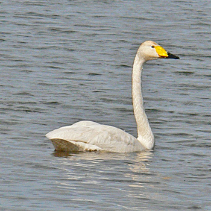

Friday, September the 2nd, 2011
back to: title, date or indexes
Never reluctant to revisit the same material again and again, I turn to what some have called one of my obsessive themes in The Dabbler this week. And what theme might that be? Well, answer the following picture quiz before clicking on the dabblelink, and you will know what to expect.
What is the connection between this man
and this bird?
